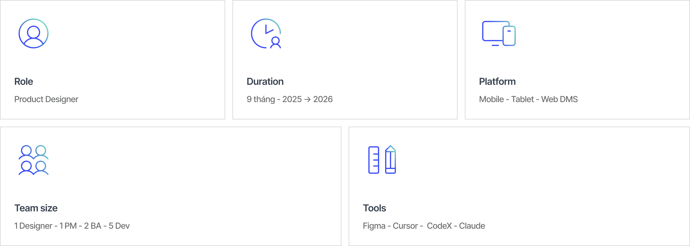

Mục tiêu thiết kế
Để nhân viên tự xử lý hoàn toàn trên mobile: tạo phiếu tại kho, nhập hàng thực tế ngay tại chỗ, chọn người duyệt, theo dõi đến hoàn tất — không cần gọi văn phòng.

| Điểm đau | Nguyên nhân gốc | Hậu quả |
|---|---|---|
| Thông tin phân tán | Dữ liệu phiếu CI nằm rải rác ở 3 màn hình khác nhau — danh sách nhiệm vụ, danh sách chứng từ, màn hình duyệt | Cần ít nhất 3 bước điều hướng để kiểm tra một phiếu; nhân viên bị lạc giữa chừng khi đang ở kho |
| Không có phản hồi sau khi tạo phiếu | Không có xác nhận hoặc hướng dẫn bước tiếp theo sau khi bấm "Lấy hàng & tạo phiếu" | Nhân viên gọi văn phòng hai lần về cùng một phiếu — lần xác nhận đã tạo, lần hỏi làm tiếp gì |
| Mất ngữ cảnh trong chuỗi duyệt | Ghi chú của người duyệt L1 không hiển thị cho L2/L3 trên màn hình xem chi tiết | Người duyệt phải gọi lại người nộp trước khi quyết định; dữ liệu mất tin cậy ở các khâu sau |
Để nhân viên tự xử lý hoàn toàn trên mobile: tạo phiếu tại kho, nhập hàng thực tế ngay tại chỗ, chọn người duyệt, theo dõi đến hoàn tất — không cần gọi văn phòng.
Loại bỏ lỗi nhập lại từ giấy ảnh hưởng đến dữ liệu tồn kho đầu nguồn. Mỗi phút tiết kiệm × hàng nghìn đội mỗi ngày = lượng giờ vận hành đáng kể thu hồi.
Thông tin phân tán
Kiểm tra một phiếu CI cần đi qua 3 màn hình và 7+ thao tác. Không có màn hình tổng hợp — nhân viên thường bị lạc giữa chừng và phải bắt đầu lại từ màn hình nhiệm vụ.
Không có phản hồi sau khi tạo phiếu
Nhân viên không biết thao tác "Lấy hàng" có thành công không. Có người gọi văn phòng hai lần về cùng một phiếu — lần xác nhận phiếu tồn tại, lần hỏi làm tiếp gì.
Mất ngữ cảnh trong chuỗi duyệt
Người duyệt L2 phải gọi người nộp trước khi duyệt vì không thấy ghi chú của L1 trên màn hình xem chi tiết. Gây chậm trễ và làm giảm độ tin cậy của dữ liệu.

Hai vòng wireframe: vòng đầu đặt chuỗi duyệt trên cùng màn chi tiết — nhân viên bỏ qua; vòng hai chuyển xuống dưới các trường nhập, khớp mental model "điền xong rồi gửi". Thứ tự này giữ nguyên đến production.

| Quyết định | Lý do | Đánh đổi |
|---|---|---|
| Danh sách theo trạng thái, không theo thời gian | Nhân viên tìm việc cần xử lý, không tìm mục cũ nhất — xác nhận qua test wireframe đầu tiên | Mất thứ tự ngày tháng mà một số supervisor quen dùng |
| Bottom sheet xác nhận, không mở màn hình mới | Giữ ngữ cảnh kho phía sau; phù hợp với mức độ "nhẹ" của thao tác xác nhận trước khi lấy dữ liệu | Cảm giác xác nhận ít "nặng" hơn — chấp nhận được vì không có hành động hủy không được |
| Dropdown chọn người duyệt inline, không mở màn hình picker riêng | Server trả về 2–5 tên; mở màn hình mới thêm điều hướng không cần thiết với lượng dữ liệu nhỏ | Nếu sau này danh sách người duyệt lớn hơn sẽ cần thiết kế lại |
| Lịch sử duyệt hiển thị cho mọi vai trò | Giải quyết điểm đau "mất ngữ cảnh" mà không cần thêm màn hình lịch sử riêng | Màn hình chi tiết dài hơn một chút |
Dùng Cursor AI để chuyển ghi chú workshop thành outline 17 màn hình có cấu trúc và soạn thảo copy cho dialog xác nhận. BA dùng tiêu chí chấp nhận do AI tạo từ user flow làm chuẩn review sprint — giảm khoảng một nửa câu hỏi qua lại. Khi áp dụng pattern Card + BottomSheet + tab-detail cho hai module khác, tôi dùng Claude Cowork để batch-swap component (đặt lại tên frame, variant và layer chưa đặt tên theo quy mô) — việc vốn mất cả ngày hoàn thành trong một phần nhỏ thời gian.
Nhanh hơn mỗi phiếu
~64%
~5 phút so với ~14 phút (pilot 2 tuần)Ít cuộc gọi hỏi trạng thái
~70%
Cuộc gọi đến văn phòng giảm (pilot 2 tuần)Ít lỗi nhập số lượng
~40%
Loại bỏ bước chép tay từ giấyDùng chung một pattern
3 module
Thiết kế một lần, áp dụng nhiều nơiSố liệu từ pilot nội bộ 2 tuần và các buổi usability test với đội BA + 3 nhân viên field sales. Analytics production chưa được cài đặt tại thời điểm pilot.
Nếu làm lại
Bước tiếp theo